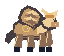
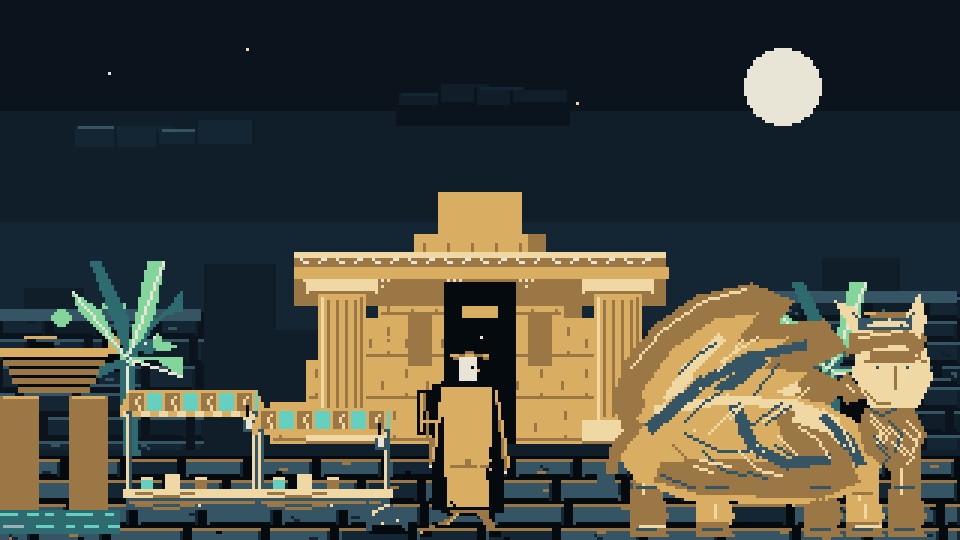
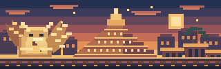
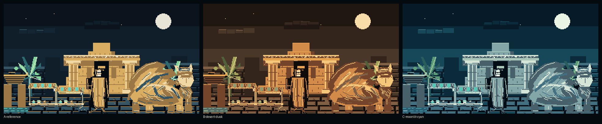
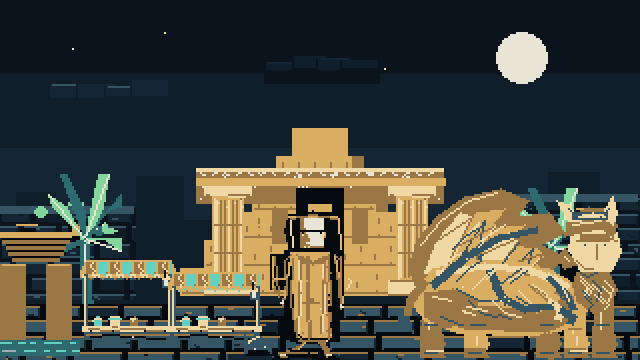
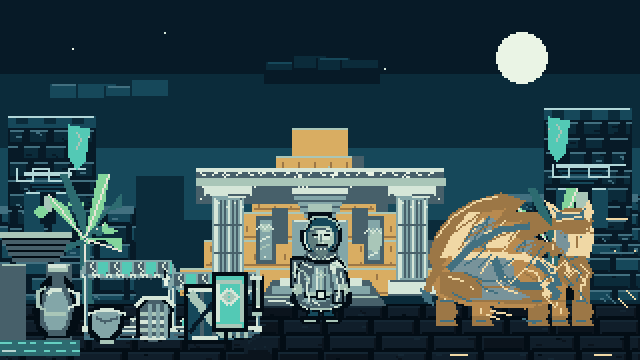
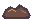
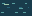

CHARACTER / SPRITE
Ламассу · Страж
Отдельный спрайт персонажа. Сохранён как исходный визуальный материал для дальнейшей детализации.
Единое место для всех художественных направлений, спрайтов, персонажей и версий интерфейса ASHUR. Здесь фиксируем визуальные ориентиры и сохраняем историю итераций — новые материалы будут добавляться, а старые не исчезнут.
＋ ЗАГРУЗИТЬ СВОИ ИЗОБРАЖЕНИЯ В БИБЛИОТЕКУ ↗














